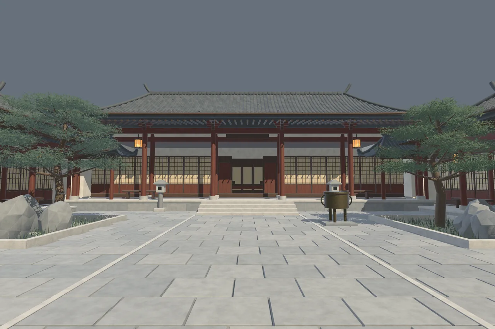
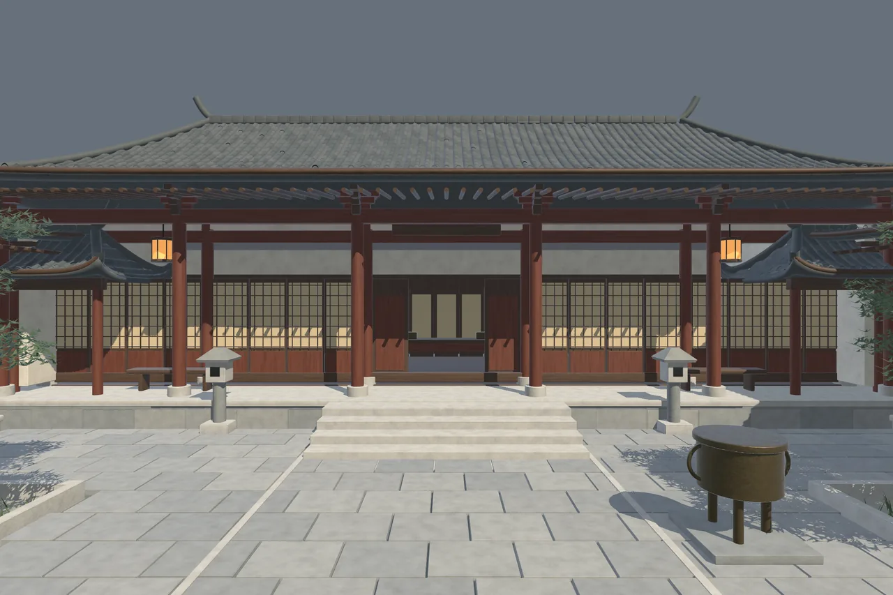

Han Courtyard Estate
A house shaped around open sky.

A house shaped around open sky.
A detailed courtyard estate brings together a main hall, side residences, connecting corridors and a planted outer landscape.
70 spatial sections
2 estate assemblies
30 material families
Local technical candidate · Not listed on the Asset StoreGeometry budget
Triangle counts from the candidate’s Unity mesh inventory. “Tris” means triangles, not authoring polygons.
| Content / configuration | Triangles |
|---|---|
| Complete exterior · Unity imported geometry | 1,439,525 |
| Architecture & courtyard subset | 1,086,076 |
The architecture subset is part of the complete total, not an additional asset count. The original FBX includes 208 exactly zero-area triangles omitted by Unity. No LOD meshes.
A closer look
Select an image to explore




Inside the project
Choose the architecture-and-courtyard assembly or the complete estate with optional field, trees and grass. Spatial-section prefabs preserve the authored layout and detailed geometric roof tiles.
Tested configuration
Unity 6000.6.0f1
Universal Render Pipeline 17.6.0
Windows · Direct3D 11 · Linear
Other Unity versions, render pipelines and platforms have not been verified. No target frame rate is promised.
Scope & limitations
Spatial sections are not interchangeable snap-grid construction modules. Furnished rooms are a separate project. High-detail desktop geometry with no LODs, animated doors, wind, NavMesh or baked lighting. Foliage is visual-only.